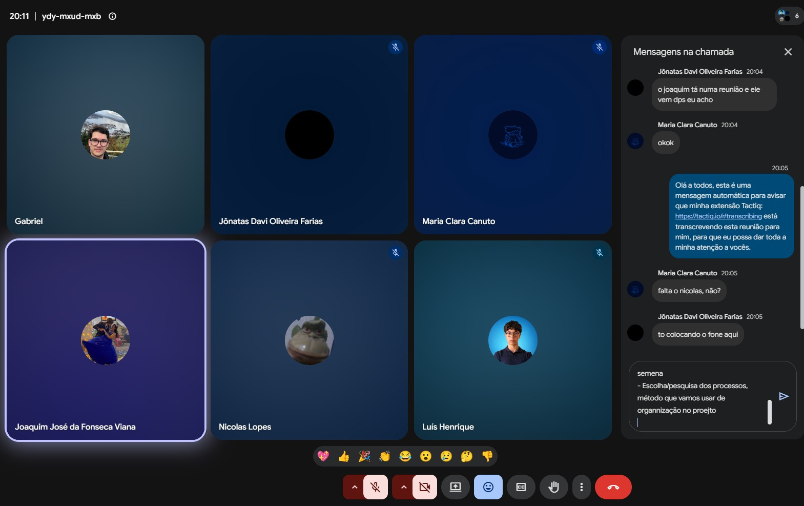
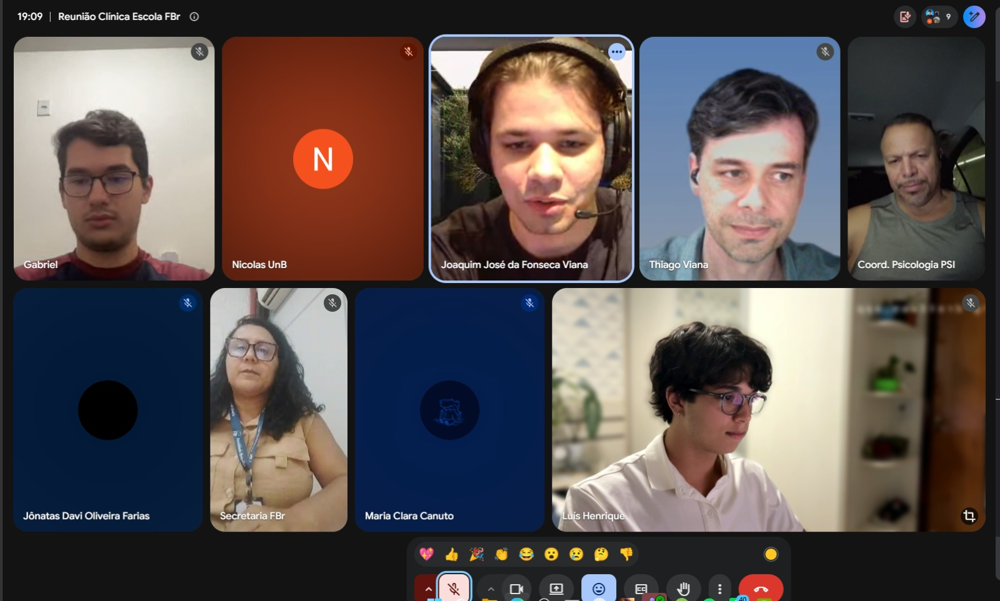
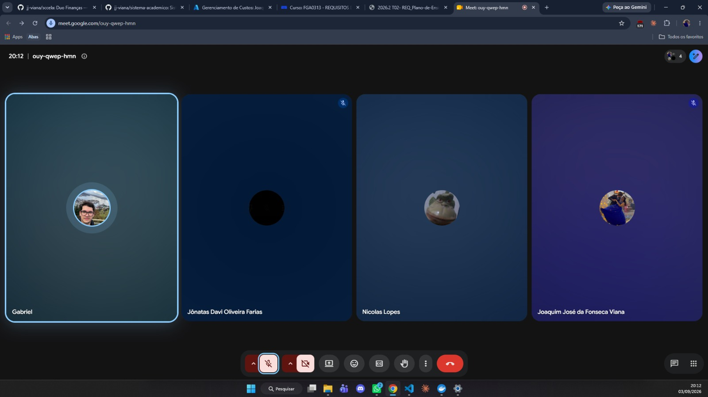

Unidade 1
Registro das reuniões realizadas durante a Unidade 1 do projeto Clínica Escola FBr.
Reunião de alinhamento 01
Data: 20/08/2026 Local: Reunião on-line(Google Meet) Participantes: Gabriel; Joaquim José da Fonseca Viana; Jônatas Davi Oliveira Farias; Luís Henrique; Maria Clara Canuto; Nicolas Lopes.

Figura 1 — Registro da reunião de alinhamento 01, realizada em 20/08/2026.
Resumo
O primeiro alinhamento formal da equipe foi realizado para organizar a preparação da reunião com a Faculdade Brasília, as entregas da Unidade 1, o cronograma de curto prazo, a pesquisa sobre abordagem, ciclo de vida e processo de desenvolvimento e a divisão inicial de responsabilidades.
Pautas e decisões
- Alinhamento das perguntas e dos tópicos para a reunião com a Faculdade Brasília, com foco no cenário atual da Clínica Escola, nos processos, nos atores, nos problemas e nas necessidades.
- Revisão das entregas previstas para a Unidade 1 e dos itens do template de Visão de Produto e Projeto.
- Definição da estratégia de pesquisa e posterior escolha da abordagem, do ciclo de vida e do processo de desenvolvimento.
- Organização do GitHub e do GitPages, aguardando a aprovação da proposta pelo professor antes do início do trabalho definitivo no repositório oficial.
- Definição da importância de concentrar evidências e gestão do trabalho no GitHub, mantendo a rastreabilidade do projeto.
- Divisão das atividades e dos prazos entre os integrantes, com registro das alterações relevantes no histórico de revisão do documento.
Encaminhamentos
Todos os integrantes ficaram responsáveis por pesquisar alternativas de abordagem, ciclos de vida, processos, tecnologias e ferramentas. Joaquim ficou responsável por adiantar o item 1.2 e preparar o item 2.5; Jônatas, pela formatação final; Luís Henrique, pelo cronograma, pela ata e pelo contato com o professor; e a equipe de perguntas, pela consolidação do roteiro da entrevista.
Reunião de levantamento inicial de requisitos
Data: 26/08/2026 Local: Reunião on-line (Google Meet) Participantes: Equipe UnB e representantes da Clínica-Escola/FBr.

Figura 2 — Registro da reunião de levantamento inicial de requisitos, realizada em 26/08/2026.
Resumo
A reunião teve como objetivo compreender o funcionamento atual da Clínica-Escola, identificar os principais problemas e levantar requisitos iniciais para orientar o escopo do sistema.
Cenário e problemas discutidos
- A maior parte do processo é manual, com apoio pontual de planilhas compartilhadas em nuvem.
- O fluxo atual envolve inscrição, identificação e triagem do paciente, distribuição entre supervisores e estagiários, agendamento, pagamento da taxa social, sessões, registro de evolução e relatório final.
- O atendimento psicológico é presencial. A inscrição inicial pode ser digitalizada, mas autorizações e atendimentos permanecem sujeitos às exigências presenciais da clínica.
- O principal gargalo é o agendamento e sua confirmação, incluindo cancelamentos sem aviso, faltas, remarcações e dificuldade de busca ativa.
- Quando uma vaga é liberada, é necessário realocar rapidamente outro paciente para evitar que o estagiário fique sem atendimento.
- O excesso de registros em papel dificulta o rastreamento, o acompanhamento e a consolidação das informações.
Requisitos e direcionamentos iniciais
- Cadastrar e rastrear pacientes, gerenciar agendamentos, confirmações, cancelamentos e remarcações.
- Identificar o estagiário e o supervisor responsáveis por cada atendimento.
- Controlar faltas e alertar para situações de desligamento conforme as regras da clínica.
- Acompanhar vagas disponíveis e apoiar a realocação de pacientes da fila de espera.
- Registrar a evolução após cada sessão e gerar o relatório final a partir do histórico.
- Emitir declaração automática de comparecimento e apoiar a comunicação com os pacientes.
- Acompanhar o pagamento da taxa social de R$ 35,00.
- Produzir relatórios administrativos e apoiar fiscalizações do Conselho e do MEC.
- Considerar pré-classificação inicial dos pacientes, sempre com revisão humana.
Restrições e próximos passos
O sigilo das informações psicológicas é uma restrição central. O sistema deverá adotar níveis de acesso adequados aos papéis de estagiários, supervisores e demais usuários, além de evitar exposição desnecessária na consulta à fila de espera. Também deverá ter interface simples, responsiva e acessível, adequada ao uso pelo celular.
O desenvolvimento será modular, começando pelas dores mais relevantes e por um escopo viável no semestre. O mínimo esperado pela clínica é rastrear o paciente, realizar a marcação e identificar o aluno responsável pelo atendimento. A equipe deverá consolidar o documento da proposta, produzir os diagramas das seções responsáveis, revisar o conteúdo e enviá-lo ao professor.
Projeto GitHub Pages — entrega, slides e gravação de vídeo
Data: 03/09/2026 Participantes: Gabriel da Cunha Barbaceli; Joaquim José da Fonseca Viana; Jônatas Davi Oliveira Farias; Nicolas Lopes.

Figura 3 — Registro da reunião de acompanhamento do projeto, realizada em 03/09/2026.
Objetivo
Alinhar a entrega do GitHub Pages, a estrutura da apresentação e a gravação do vídeo.
1. Status e prazos
- Joaquim deverá concluir a revisão e sua parte do documento até a tarde de 04/09, após a prova.
- A entrega interna do conteúdo do GitHub Pages ficou prevista, no máximo, para 04/09.
- Embora o cronograma interno previsse a entrega em 03/09, a equipe considerou viável concluí-la em 04/09.
- Todo o conteúdo deverá estar no repositório até sábado, 05/09, para reservar o domingo e a segunda-feira para a gravação e a preparação.
- O prazo mencionado para a gravação do vídeo é 08/09.
2. Apresentação
- Foi definido o uso de slides simples como apoio, em vez de realizar a apresentação navegando diretamente pelo GitHub Pages.
- Caso haja tempo, o GitHub Pages poderá ser mostrado rapidamente ao final.
- A duração-alvo é de aproximadamente 10 minutos, com limite máximo planejado de 13 minutos.
- A apresentação deverá ser objetiva e apresentar o software como uma solução para o cliente.
- O conteúdo deverá ser sintetizado, evitando reproduzir integralmente o material já disponível no GitHub Pages.
3. Estrutura dos tópicos
A divisão preliminar dos tópicos da apresentação ficou organizada da seguinte forma:
- Cenário atual e intervenção social.
- Solução proposta — parte 1, até o tópico 2.4.
- Solução proposta — parte 2, a partir do tópico 2.4, incluindo viabilidade técnica e stack tecnológica.
- Estratégias de Engenharia de Software.
- Engenharia de Requisitos.
- Gestão de projetos e reuniões.
A página de reuniões será mencionada brevemente dentro do tópico de gestão de projetos.
4. Divisão das falas
- Foi considerada como referência a apresentação do tópico redigido por cada integrante, por proporcionar maior familiaridade com o conteúdo.
- Será criada uma enquete no grupo para confirmar quem apresentará cada um dos seis tópicos, incluindo Maria e Luís.
- Luís foi sugerido para os tópicos mais técnicos, especialmente Estratégias de Engenharia de Software e Engenharia de Requisitos.
- Luís já se ofereceu para preparar sua fala antecipadamente.
- A divisão final das falas será definida no grupo.
5. Gravação do vídeo
- A data provisória para a gravação é domingo, 06/09.
- O horário será definido no grupo, considerando também Maria e Luís, que estão viajando.
- A primeira opção discutida é realizar a gravação com todos juntos, em uma reunião ou ligação, como simulação do ensaio.
- Caso os horários não coincidam, cada integrante poderá gravar sua parte separadamente para posterior junção dos vídeos.
6. Página de reuniões
- Deverá ser adicionada uma foto da reunião à página de reuniões do GitHub Pages.
- Também deverá ser adicionado o link para a ata completa, mantida em uma pasta separada no repositório.
- Gabriel ficou responsável por implementar a imagem em Markdown e o link para o documento completo ao término da reunião.
7. Próximos passos
- Gabriel deverá adicionar a foto e o link da ata à página de reuniões.
- A equipe deverá criar a enquete para definir os responsáveis pelos seis tópicos da apresentação.
- A equipe deverá definir no grupo o horário da gravação de domingo, após consultar os integrantes que estão viajando.
- Joaquim deverá concluir a revisão e sua parte do documento até a tarde de 04/09.
Encerramento
Ficaram encaminhados o prazo interno do GitHub Pages, a estrutura dos slides, a divisão preliminar dos conteúdos e a gravação provisoriamente prevista para domingo, 06/09. A divisão final das falas e o horário da gravação ainda dependem de confirmação no grupo.